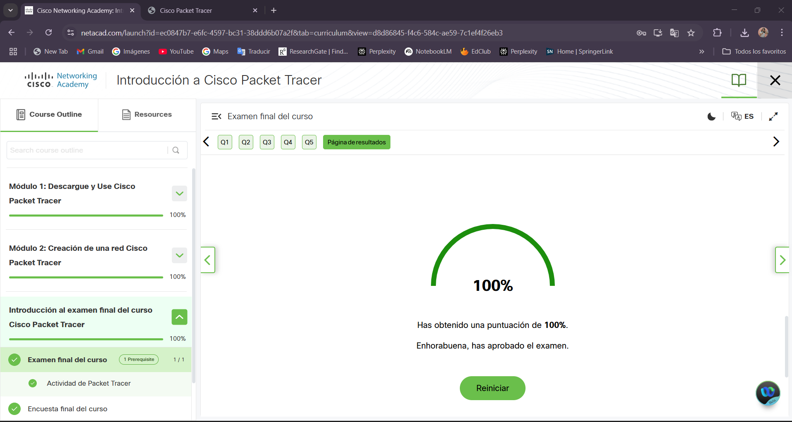

Evidencias y Galería
Fotos, capturas y demostraciones de trabajos y prácticas
Evaluaciones Parciales
Evidencias de evaluaciones parciales de los estudiantes

{kind=link}

Curso de Redes Informáticas
Este sitio contiene el portafolio académico del curso de Redes Informáticas, incluyendo el trabajo de tres estudiantes, módulos de contenido, laboratorios, evaluaciones y conclusiones del curso.
Actividades organizadas según la evaluación del curso
Fecha: Semana 1 - Semana 10
Descripción: Tres módulos de contenido teórico que cubren fundamentos de redes, modelos de referencia OSI/TCP-IP, y conceptos avanzados de enrutamiento, conmutación y seguridad.
Fecha: Semana 2 - Semana 11
Descripción: Seis laboratorios prácticos que combinan investigación teórica, armado de cables, configuración de equipos, análisis de tráfico y diseño de redes.
Fecha: Semana 5, 8 y 12
Descripción: Tres parciales evaluativos que miden el comprensión de los conceptos clave del curso.
Fecha: Semana 13 - Semana 16
Descripción: Proyecto integrador que permite aplicar todos los conocimientos adquiridos en el diseño de una solución de red completa.
Presentaciones, PDFs y recursos de apoyo
3 semanas
3 semanas
4 semanas
Se realizaron 6 laboratorios prácticos durante el curso
Fecha: [DD/MM/AAAA]
Investigación y análisis de los problemas comunes de comunicación que se presentan en las redes informáticas.
Fecha: [DD/MM/AAAA]
Práctica sobre el correcto armado e instalación de cables de red, siguiendo estándares de cableado estructurado.
Fecha: [DD/MM/AAAA]
Estudio y configuración de equipos de interconexión de redes como switches, routers y otros dispositivos.
Fecha: [DD/MM/AAAA]
Visita técnica y observación de la infraestructura de comunicaciones del cuarto técnico de la institución.
Fecha: [DD/MM/AAAA]
Análisis de tráfico de red con Wireshark, configuración de ISP y creación de redes privadas virtuales (VPN).
Fecha: [DD/MM/AAAA]
Implementación de software de monitoreo de red y diseño de una topología de red simple utilizando herramientas profesionales.
Fotos, capturas y demostraciones de trabajos y prácticas
Evidencias de evaluaciones parciales de los estudiantes
Trabajos finales e importantes del semestre
Objetivo: Diseñar una solución de red completa para una empresa ficticia, aplicando todos los conceptos aprendidos.
Competencias: Diseño de topologías, configuración de dispositivos, seguridad de red, documentación técnica.
Datos generales del curso y contacto
Este portafolio estudiantil es una compilación digital de todos los trabajos, actividades, laboratorios y evaluaciones realizados durante el curso de Redes Informáticas en el segundo semestre de 2025. El sitio ha sido diseñado para facilitar la presentación organizada de evidencias de aprendizaje.
Docente: Dra. Y. Castillo
Estudiantes: Alexandra Cruz, Carlos, Karyne
Institución: Universidad Tecnológica de Panamá - Centro Regional de Chiriquí
Frontend: HTML5, CSS3, JavaScript
Herramientas: Cisco Packet Tracer, Wireshark
Control de Versiones: Git & GitHub Pages
Alojamiento: GitHub Pages
Este curso ha proporcionado a los estudiantes las bases sólidas en redes informáticas necesarias para continuar con especializaciones más avanzadas. A través del trabajo colaborativo, los estudiantes han desarrollado no solo competencias técnicas, sino también habilidades de trabajo en equipo, resolución de problemas y pensamiento crítico.
Se agradece a todos los estudiantes por su dedicación y compromiso durante el curso. La participación activa, el trabajo colaborativo y la perseverancia en los laboratorios han sido fundamentales para el éxito de este proceso de aprendizaje. ¡Felicidades a todos!